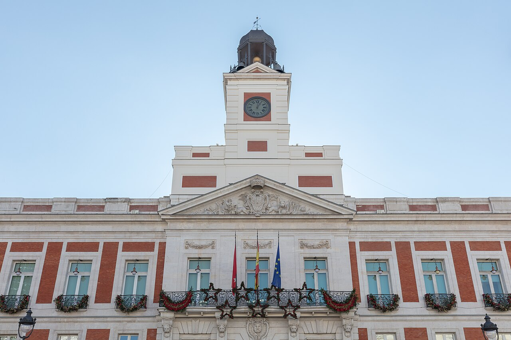
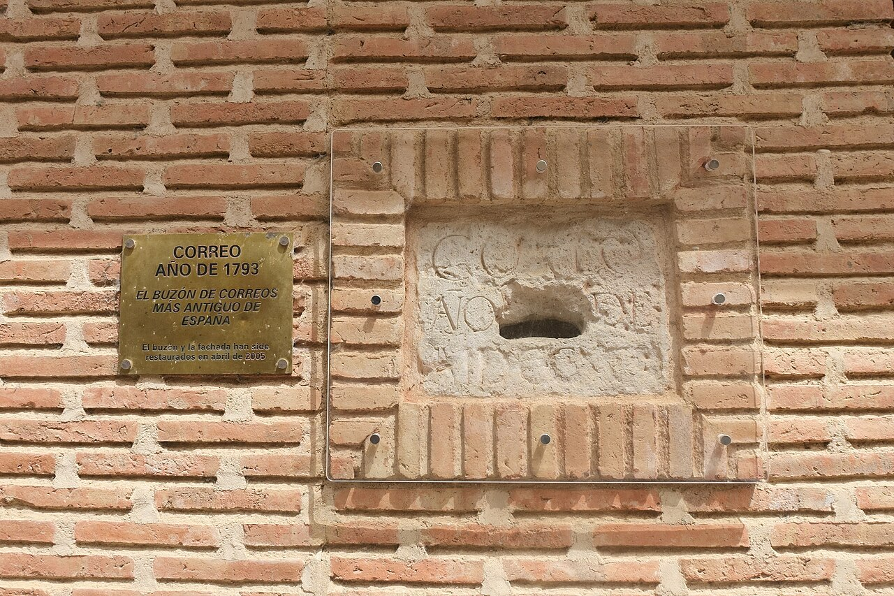
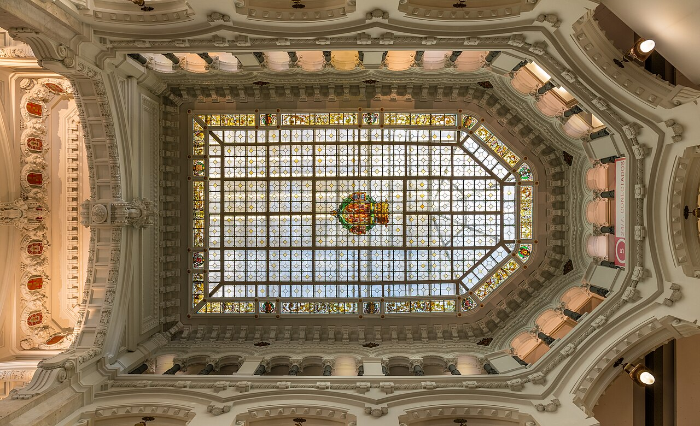

Qué ofrecía
El transporte y la entrega de cartas y correspondencia por todo el territorio.
Cómo nació Correos, qué ofrecía en sus primeros siglos y cómo presta hoy su servicio.
Correos nació en Madrid el 8 de julio de 1716. Felipe V ya había querido convertir el correo en una «Renta Real» en 1706, pero la Guerra de Sucesión lo retrasó.
Al terminar la guerra, el servicio postal dejó de ser una concesión a familias nobles y pasó a ser responsabilidad del Estado, administrado por la Corona. Ese es el nacimiento de Correos como servicio público.

El transporte y la entrega de cartas y correspondencia por todo el territorio.
A la Corona y la Administración, y a los ciudadanos. Correos se define desde entonces como un servicio público «de todos y para todos».
Todo era manual: los empleados leían cada dirección para separar la correspondencia y los carteros la repartían a pie.
Durante los siglos XVIII y XIX (y parte del XX), Correos fue sumando servicios que hoy damos por hechos.
Grupo Correos, publicación conmemorativa de los 300 años (1716–2016)

El 22 de junio de 2001 el Gobierno aprobó transformar Correos en una sociedad anónima estatal, por «los cambios del entorno, las nuevas tecnologías y la liberalización del sector postal europeo» (Correos, sello de 2001).
Desde entonces es la Sociedad Estatal Correos y Telégrafos, S.A., S.M.E., 100 % pública y dependiente del holding estatal SEPI.
Hoy Correos es el operador que presta el servicio postal universal en España (recoger y entregar envíos en todo el territorio) y compite en el mercado de paquetería.

La paradoja de Correos
La paquetería creció un 14 % en 2024 y ya es el principal motor de ingresos del Grupo, impulsada por la automatización.
Aun así, Correos tiene pérdidas porque el negocio de cartas, que fue su base durante tres siglos, no deja de caer.